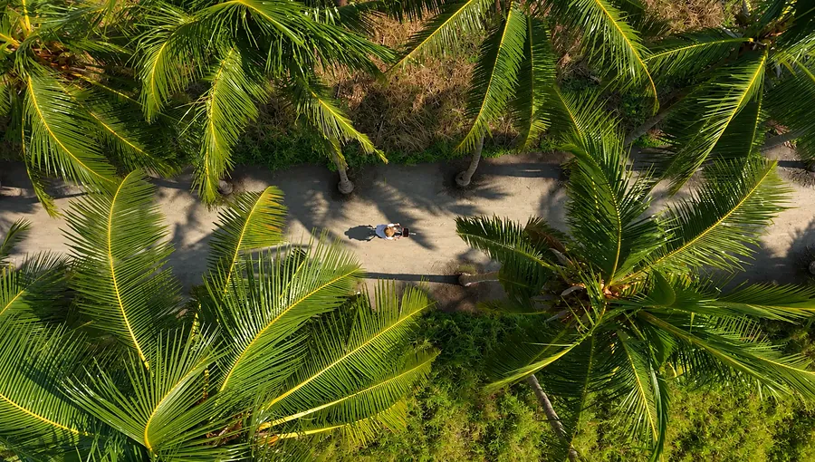
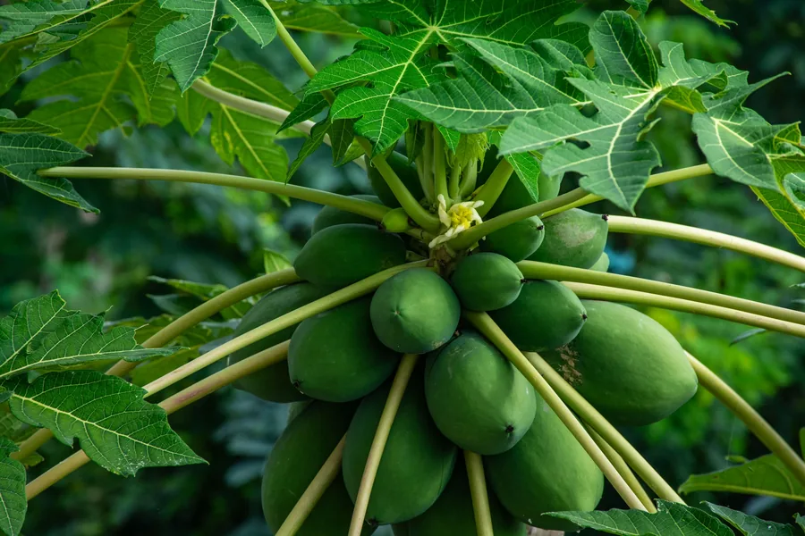

Новинка · быстрее всего
Новинка · быстрее всегоГидросамолёт
~20 минут
- Перевозчик
- Maldivian (национальная авиакомпания)
- Отправление
- Терминал гидросамолётов, аэропорт Велана
- Прибытие
- Платформа гидросамолётов Тодду — рядом с гестхаусом

Один из сельскохозяйственных островов Мальдив: папайя и арбузы растут под пальмами, а риф начинается прямо у пляжа.


Вблизи бирюзового океана раскинулись зелёные фруктовые плантации. Под пальмами здесь выращивают папайю, арбузы и другие местные фрукты.
На острове есть два пляжа для туристов, где разрешено отдыхать в купальниках. Вас ждут мягкий белоснежный песок, пальмы и прозрачная вода. Коралловый риф находится совсем близко к берегу: достаточно зайти в воду, чтобы исследовать его с маской.
Тодду — жилой остров, на котором живут местные жители. Здесь есть небольшие магазины, местная больница и аптека, школа и детский сад, а также гестхаусы и кафе.
Встречи с морскими обитателями зависят от природных условий и не гарантируются.
Нажмите, чтобы узнать больше.
Белый песок, пальмы и риф у самого берега — у каждого пляжа своё настроение.
Сельскохозяйственный остров Мальдив — свежие фрукты, зелёные поля и настоящая островная кухня.
Свежие морепродукты, островные фрукты и настоящая мальдивская кухня — любимые места наших гостей.
На фото — типичные блюда, а не фотографии ресторанов. Часы работы меняются — спросите нас о рекомендациях на сегодня.
Тодду находится в атолле Северный Ари, к западу от Мале. Выберите путь по времени и бюджету — мы всё забронируем и встретим вас.
Новинка · быстрее всего~20 минут
 Самый популярный
Самый популярный60–90 минут
Ежедневно. Время может меняться из-за погоды и сезона — мы подтверждаем рейс при бронировании.
 Бюджетно
Бюджетно4–5 часов
Зависит от погоды на море; мы поможем со стыковкой из аэропорта.
Тарифы включают налоги и не возвращаются. Расписание может меняться — мы уточняем актуальное время при бронировании мест.
Заказать трансфер
Откройте зелёную сторону Мальдив и попробуйте фрукты, выращенные на Тодду.

Два бикини-пляжа и снорклинг у рифа прямо возле острова.

Гуляйте или катайтесь на велосипеде по песчаным тропинкам между пальмами, фермами и деревней.

Живите в гестхаусе, заглядывайте в местные кафе и почувствуйте повседневный ритм острова.
Нажмите на тему, чтобы узнать главное.
Выбрали Тодду ради черепах, а влюбились в людей. Дхаин и Юлия организовали всё — ужин на пляже в последний вечер был настоящей магией, а видео с дрона на пальмовой аллее теперь наше любимое воспоминание.
Поездка к мантам и акулам-нянькам — главное событие моего года. Всё чётко по времени, гиды внимательные и доброжелательные, цена честная — ровно то, что обещали.
Впервые на Мальдивах — и с первого дня как дома. Идеально чистый гестхаус, тихий бикини-пляж и свежая папайя каждое утро. На все сообщения отвечали за считанные минуты.
Ездили всей семьёй с двумя подростками. Дети до сих пор вспоминают дельфинов и гидроцикл. Отличное соотношение цены и качества, безопасный снорклинг с гидом и настоящая местная атмосфера.
Тодду — зелёная сторона Мальдив: фермы, пальмы и самая прозрачная вода, которую я видела. Уже на первом снорклинге встретили трёх черепах. Чудесные хозяева!
Просто, спокойно и прекрасно организовано. В Essential Escape — одна яркая экскурсия и много времени для велосипеда и моря. С радостью забронировал бы то же самое ещё раз.
Ужин на пляже и день на курорте идеально дополнили жизнь на локальном острове. Всё было по-личному — совсем не похоже на «пакетный» тур. Спасибо за незабываемый медовый месяц!
Идеальная неделя. Закатная рыбалка, а потом пойманная нами рыба на гриле прямо на пляже — незабываемо. Тёплые, внимательные люди, которым важна каждая деталь.
Я заядлый снорклер, а риф здесь прямо у пляжа. Полудневная поездка на песчаную отмель — потрясающая, домой привёз отличные фото и видео.
Доступно, по-настоящему и очень красиво. Экскурсия по острову показала нам настоящий Тодду — фермы, деревню, людей. Мы обязательно вернёмся!